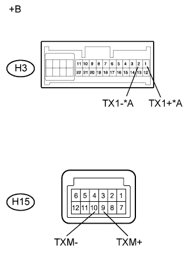

СИСТЕМА НАВИГАЦИИ (для моделей с жестким диском) > Цепь AVC-LAN |
| 1.ПРОВЕРЬТЕ ДИСПЛЕЙ МОДУЛЯ СИСТЕМЫ НАВИГАЦИИ И ИНДИКАЦИИ |
|  |
Отсоедините разъемы H3 и H15 дисплея модуля системы навигации и индикации.
Измерьте сопротивление в соответствии со значениями, приведенными в таблице ниже.
| Контакты для подключения диагностического прибора | Условие | Заданные условия |
| H3-1 (TX1+) - H3-2 (TX1-)* | Всегда | 60–80 Ом |
| H15-9 (TXM+) - H15-10 (TXM-) | Всегда | 60–80 Ом |
| *A | для моделей с мониторной системой помощи при парковке и/или мониторной системой бокового обзора |
| *a | Устройство с неподсоединенным жгутом проводов (дисплей модуля системы навигации и индикации) |
|
| ||||
| OK | |
| 2.ПРОВЕРЬТЕ ЖГУТ ПРОВОДОВ И РАЗЪЕМ (ДИСПЛЕЙ МОДУЛЯ СИСТЕМЫ НАВИГАЦИИ И ИНДИКАЦИИ - УСТРОЙСТВО, СОХРАНИВШЕЕ ДАННЫЙ КОД) |
Проверьте все цепи AVC-LAN в соответствии со схемой соединений сети AVC-LAN.
Отсоедините все разъемы цепей AVC-LAN.
Убедитесь в отсутствии короткого замыкания или обрыва во всех цепях AVC-LAN.
|
| ||||
| OK | |
| 3.ПРОВЕРЬТЕ НЕИСПРАВНЫЕ ДЕТАЛИ |
Последовательно отключите и подключите каждое подчиненное устройство, пока не восстановится нормальная работа ведущего устройства.
|
| ||||
| OK | ||
| ||